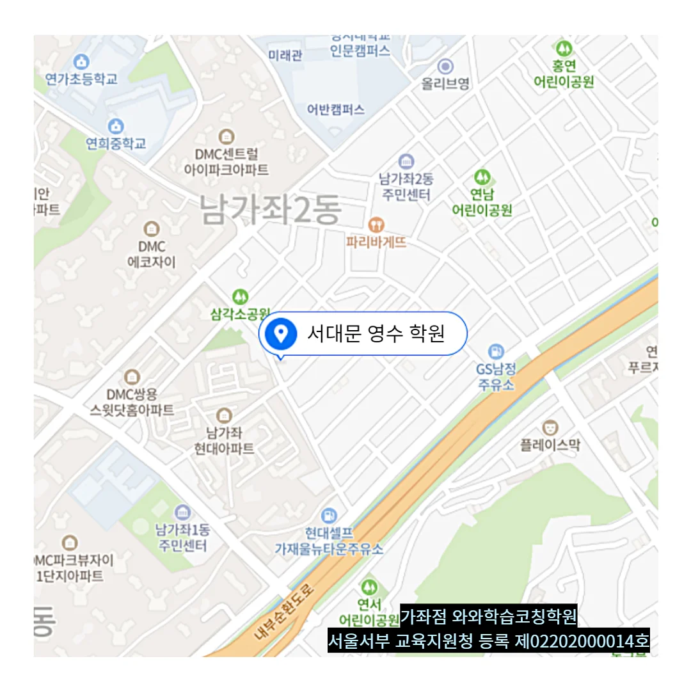

북가좌 초2 국영수학원
북가좌 초2 국영수학원
많은 학생들이 공부 계획을 세울 때 막연함과 부담감 속에서 실질적인 실행 단계로 넘어가지 못하는 어려움을 겪습니다. 이러한 과정을 통해 라틴계어에서 유래한 어려운 용어도 친숙한 의미의 연결망으로 재구성되며, 머릿속에 오래 머무르게 된다. 이때 수업 공간은 전체적으로 밝은 톤으로 꾸며져 있어 피로가 누적된 상태에서도 시야가 안정되고, 정서적으로 안심할 수 있는 분위기를 제공한다. 학습은 지식의 소비가 아니라 생산의 과정이며, 반복과 복습은 그 생산력을 높이는 핵심 기반입니다. 북가좌 초2 국영수학원은 온라인 학습 커뮤니티에서의 댓글 문화도 중요한 학습 요소로, 자신의 의견을 표현할 때 책임감을 갖고 논리적으로 말해야 한다는 점을 자연스럽게 깨닫게 되며, 이는 서술형 문제 작성 능력에도 긍정적 영향을 미친다. 문제를 풀 때 오답노트에 정답만 기록하는 것이 아니라 문제 옆 여백에 자신만의 설명이나 그림으로 개념을 시각화해 정리하면 이후 복습 시 훨씬 빠르게 기억이 회상된다. 이 과정에서 정서에 초점을 두고 이성은 흐리는 말투를 피하고, 대신 명확한 구조와 논리로 감정을 다독이되 혼란을 주지 않는 설명을 유지함으로써 이성과 감성의 균형 잡힌 상태를 지키도록 유도한다.